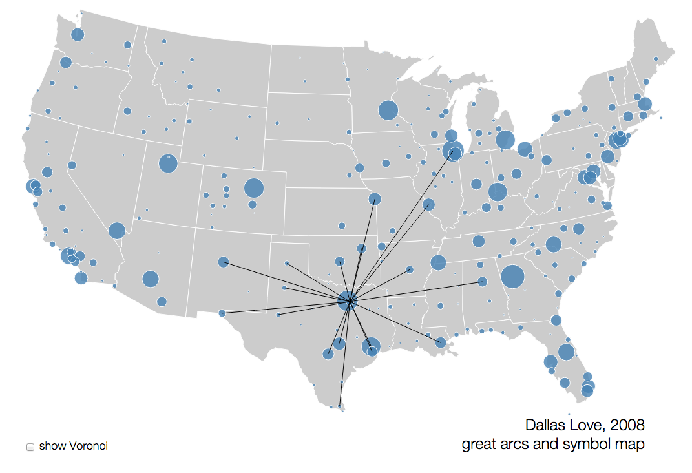

<ion-view title="Dashboard">
  <ion-nav-buttons side="left">
    <button menu-toggle="left"class="button button-icon icon ion-navicon"></button>
  </ion-nav-buttons>
  <ion-content class="has-header">
    <h1>Welcome to Wordpress Play</h1>
    <p class="specialStats">
    	<br>
    	<br>
    	
    	</p>
  </ion-content>
</ion-view>
